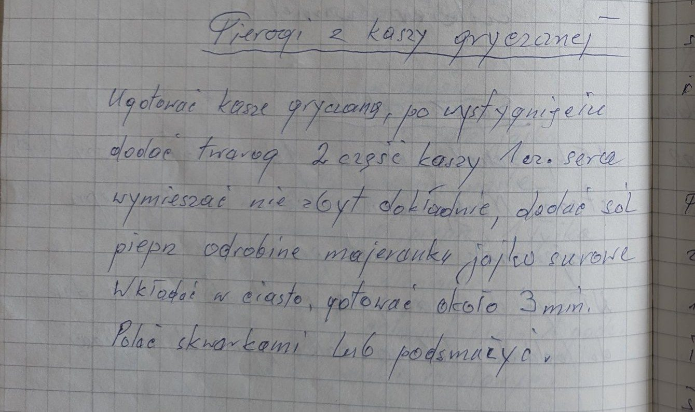
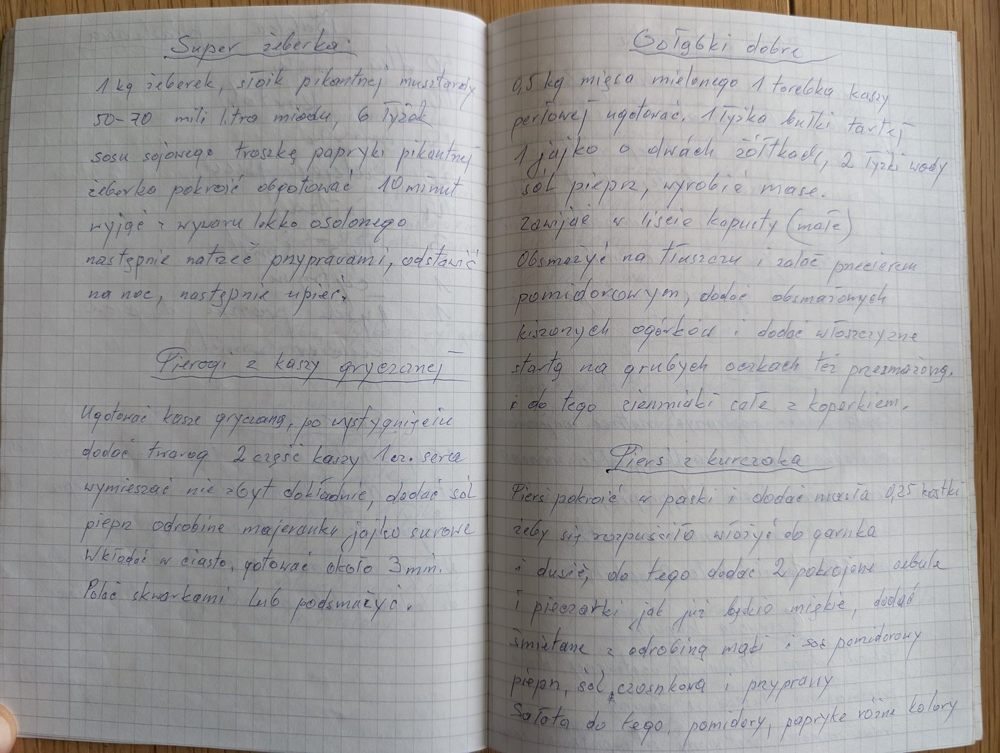

Pierogi z kaszy gryczanej


Składniki
- kasza gryczana (2 części)
- twaróg (1 część)
- sól, pieprz
- odrobina majeranku
- surowe jajko
- ciasto na pierogi
- skwarki
Przygotowanie
- Ugotować kaszę gryczaną i ostudzić.
- Dodać twaróg (2 części kaszy na 1 część sera), wymieszać niezbyt dokładnie.
- Dodać sól, pieprz, odrobinę majeranku i surowe jajko.
- Wkładać w ciasto, gotować około 3 minut.
- Polać skwarkami lub podsmażyć.
Oryginalny zapis
Pierogi z kaszy gryczanej Ugotować kaszę gryczaną, po wystygnięciu dodać twaróg 2 części kaszy 1 cz. sera wymieszać nie zbyt dokładnie, dodać sól pieprz odrobinę majeranku jajko surowe Wkładać w ciasto, gotować około 3 min. Polać skwarkami lub podsmażyć.